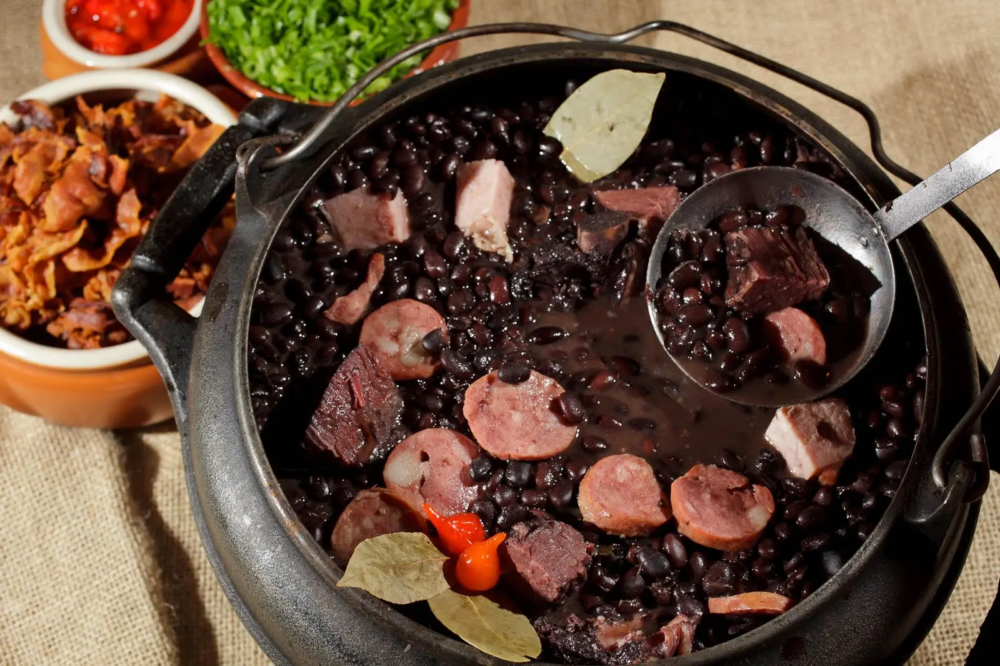

Uma gastronomia inesquecível só para você
Seja bem-vindo a uma jornada de sabores tão vasta e diversa quanto o próprio território brasileiro. A gastronomia do Brasil não é apenas comida; é um mosaico cultural que funde raízes indígenas, herança africana e tradições europeias em cada garfada.
O que esperar?

O coração do Brasil:
Experimente a Feijoada, nosso prato nacional. Um cozido rico de feijão preto com carnes suínas, servido com arroz soltinho, farofa crocante, couve refogada e fatias de laranja para refrescar o paladar.

A Força do Norte:
No Amazonas e Pará, descubra ingredientes únicos como o Açaí (servido salgado com peixe!), o Tacacá e peixes de água doce como o Pirarucu.

O Dendê da Bahia:
Sinta a energia do Nordeste com o Acarajé e a Moqueca, pratos que exalam o perfume do azeite de dendê e do leite de coco.